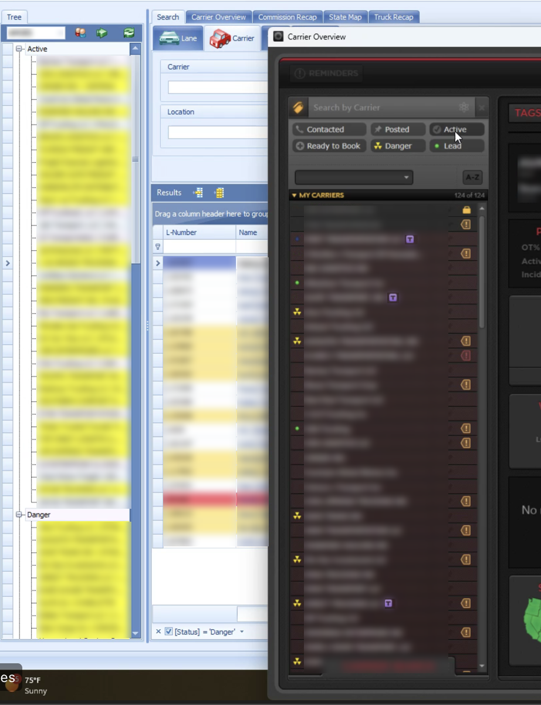
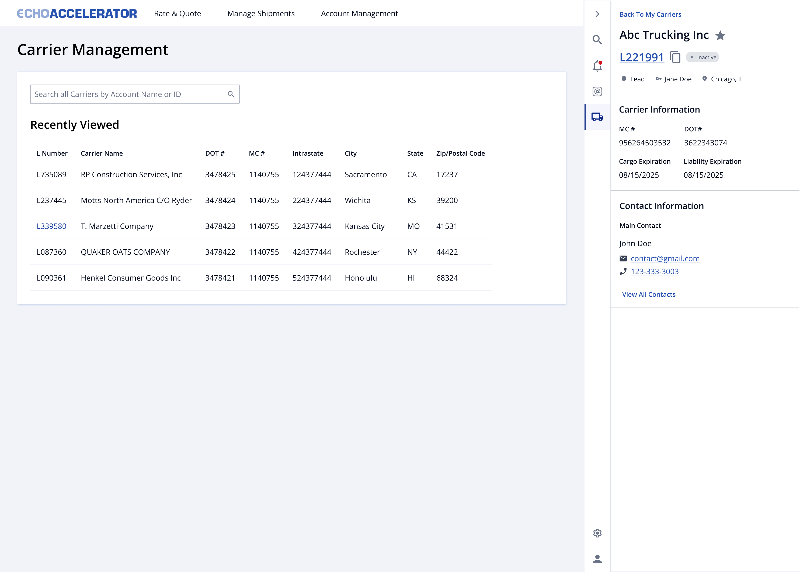
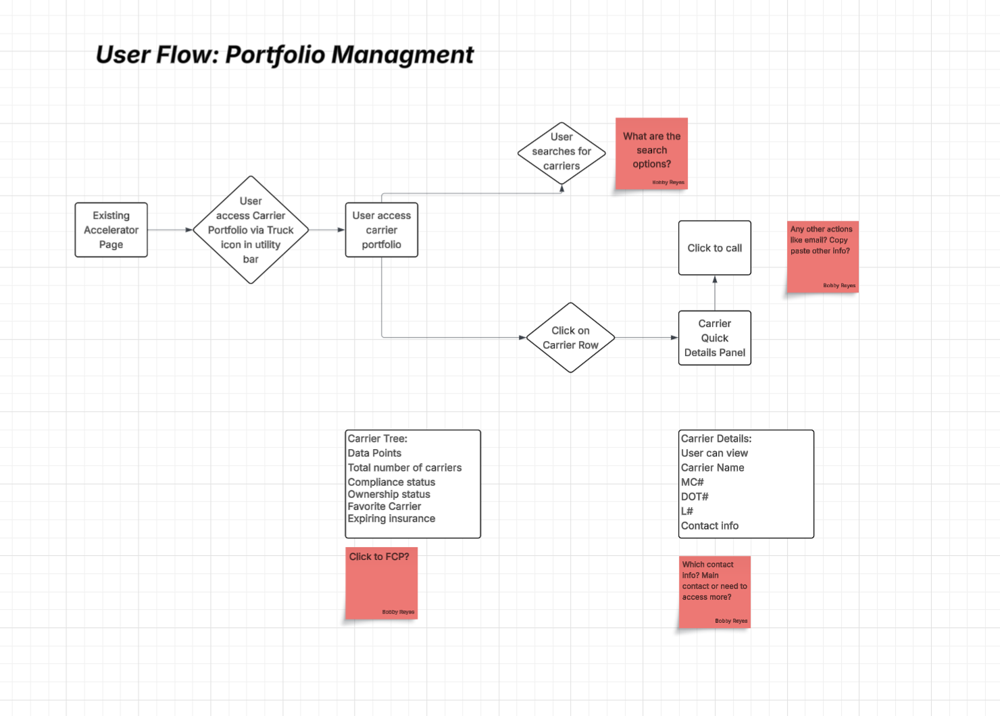
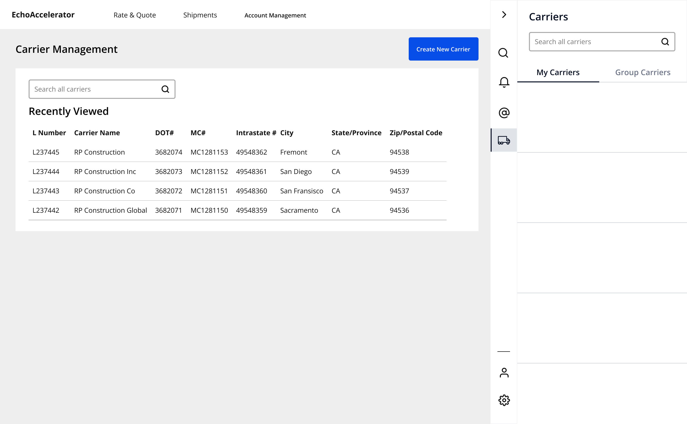
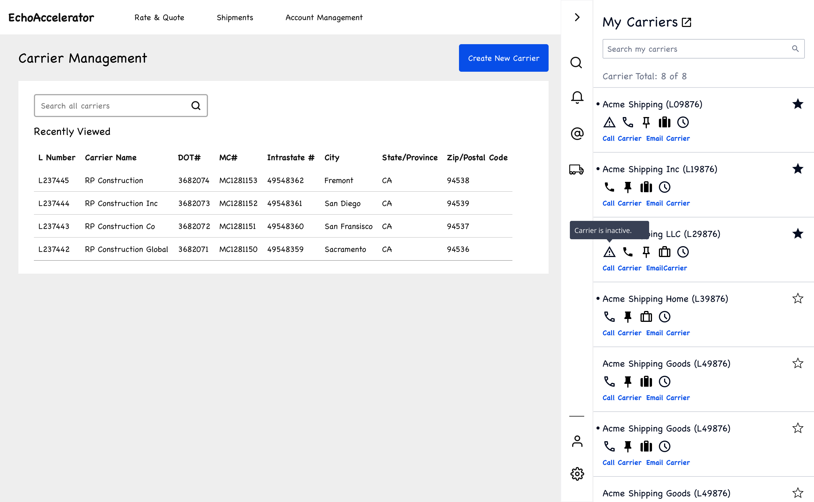
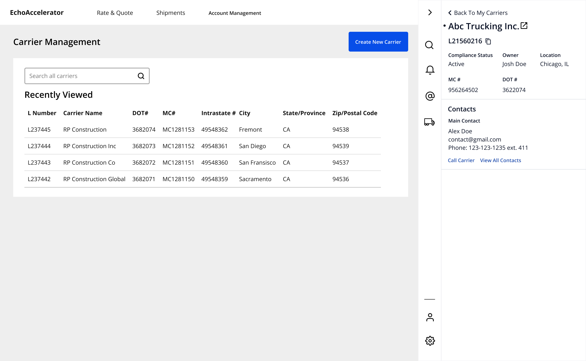

UX Design • Enterprise Software
Echo Global Logistics
Giving reps one place to see the carriers they own and whether each is safe to book.

Giving reps one place to see the carriers they own and whether each is safe to book.
Echo makes its margin on the gap between what a shipper pays and what it pays a carrier, so carrier relationships drive profit. I designed My Carriers, a rep-owned book of carriers inside Accelerator, the tool carrier sales used every day, so reps could see who was safe to call, email, and book.
A rep couldn't answer "who's mine, who can I legally use today, and who has a truck near this load" without stitching together three or four screens.
Carrier data lived in four systems that didn't talk to each other, so no single view answered a rep's real question. The easy default was posting the load publicly for any carrier to grab, which cost more than working with a carrier Echo already knew. The price was also re-negotiated from scratch each time, even with carriers Echo had worked with before, so relationships that should have compounded were spent once and forgotten. Carriers could also quietly fall out of eligibility, through expired insurance or lapsed authority, with nothing surfacing it until a shipment was blocked mid-delivery.
Carrier portfolio management already existed, split across two legacy tools, STATS and Clutch. Both showed a version of carrier status, and a nightly job moved each carrier through five ownership stages, from Lead to Opportunity to Relationship to Managed to Danger, then unassigned carriers that stopped booking after a countdown reps never saw. Reps only saw pieces of this, never all of it in one place, so plenty kept their own Excel spreadsheet to track where they actually stood.

A rep-owned book of carriers, made actionable.
My Carriers. Every query is scoped by ownership. A Carrier Sales rep can't see outside their own book, enforced at the service layer. Search by account name or ID, with favorites pinned to the top.

Three icons, color-coded. Compliance status splits across two related shapes: a color-weighted triangle for inactive, on hold, or active, and a solid circle-slash for do not use. Insurance expiration gets its own calendar icon, since it's the one compliance problem that's actually predictable, the mark shifts from a checkmark to an X as the deadline gets closer. Both carry a hover tooltip with the specifics and, for insurance, the real date.

Group Carriers, for managers and directors. A collapsible section below My Carriers, scoped to a manager's or director's direct team, giving oversight without a separate tool or a data pull.

Detail panel. Ownership stage, owner, and location right under the header; Cargo and Liability Expiration dates in Carrier Information instead of buried in a hover. Contact info and a click-to-call main contact below.
I interviewed six people across three roles (Partials reps, Team Leads, and the managers and directors above them) over the course of a week, then used Claude to help synthesize the notes into themes. The clearest split wasn't a feature request, it was a workflow difference. Team Leads and managers work a relationship-based book of 40 to 100 carriers they call by name, while Partials reps work transactionally, load by load, and don't track carrier ownership at all.
The working assumption going in was that Favorites would solve access for every non-owning role the same way. The requirements explicitly framed it as a fix for reps whose "role doesn't require ownership over specific carriers." Research said otherwise. For a Partials rep, "favorite" doesn't hold still long enough to mean anything:
“For me, my favorite carrier is the one at the moment when I have the load. So this favorite thing literally doesn't do me any good. I'm not sure exactly how that would help even.”
Marcus T. Partials RepThe workflow split from earlier showed up again and again. One Partials rep said his team didn't track or manage ownership status at all, relying instead on a memorized top-3 list of carriers, and asked for an On Hold status instead.
Team Leads reacted the opposite way. Group Carriers itself was already scoped as a requirement, managers needed to see their team's carriers. What the interviews sharpened was the model underneath it: reps see only their own carriers, managers see their direct reports', and directors see everyone below them, a three-tier hierarchy nobody had specified yet, because that was already how they thought about their teams.
A separate finding came out of the same interviews. Insurance timing needed real calibration, not just an alert. A 9-year rep wanted a full week of notice, since carriers tend to wait until the last minute to renew. A 14-day warning arrived too early to mean anything; 7 days was the number that came up as right. Not everyone wanted the nudge at all, one Team Lead was fine letting the existing compliance block catch it at booking time instead. The shipped threshold was re-tuned after launch to exactly that number.
I was the only designer, working with one product owner and five engineers, and I had about a month to get from research to handoff. I worked within the existing design system, adding a few new colors and icon states. Research was limited too, with six interviews in one week the most I could get.
Before any screens, I mapped out how a rep gets from the existing Accelerator page into their portfolio, then either searches or scans the list and clicks into a carrier. I left open questions right on the flow itself, like what search should actually match on, what else besides calling should be one click away, and which contact info actually needs to surface. Those were the questions the wireframes and prototype had to answer.

The starting user flow, with the open questions I flagged for myself before wireframing.
From there I moved to low-fidelity wireframes, covering the list, the detail flyout, the status-icon system, and the tabs separating My Carriers from Group Carriers. Normally the next step is a slow one, build a polished Figma prototype, then find time on reps' calendars to walk through it. Instead, I used those wireframes to prompt an AI tool (Lovable) into a working interactive prototype in a fraction of the time, so I could put something clickable in front of real reps immediately instead of a static mockup.



Fig. 1–3: Low-fidelity wireframes used to prompt the AI-generated interactive prototype below.
A working prototype, not a click-through: try the search, the truck icon, favoriting, and clicking into a carrier.
This wasn't a replacement for the high-fidelity design. That still had to happen, spec'd and dev-ready, for the actual engineering handoff. What it replaced was the slow part before that, guessing at direction instead of testing it. What came back from reps using this prototype shaped the high-fidelity version that shipped.
One list, not separate tabs. The original plan split My Carriers, Group Carriers, and Unowned into tabs. Manager and director interviews showed their carrier counts topped out around 30, small enough that tabs added a click without adding clarity, so the shipped version uses one list with collapsible My Carriers and Group Carriers sections. Unowned didn't make the cut. No rep owns those carriers, so they never belonged in a rep's own book, and Carrier Prospecting already handles them.
Give managers the team view, not just their own book. Managers needed to see their team's carriers, so Group Carriers runs the same ownership query across their direct reports.
Two questions, two signals, never blended. "Can I use this carrier?" (compliance) and "what's my relationship with them?" (ownership) are computed independently and never merge into one status. Ownership shows as a small colored dot beside the carrier's name, and compliance as a row of icons, with insurance expiration getting its own. Each icon is a muted grey outline when it doesn't apply and a color when it does, so only problems stand out.
Give reps who don't own carriers a second way in. Ownership isn't how every rep works, and some roles don't own carriers at all. Favorites let any rep pin any carrier, owned or not, so a list still exists for roles the ownership model wasn't built for. Typeahead backs it up, so a rep can pull up any carrier profile they haven't favorited.
My Carriers shipped to a pilot group. Reps who own carriers got a list of their book, and reps who don't got Favorites and search. Managers and directors got a team view. A month later, a structured round of feedback from those reps showed exactly what MVP speed had cost us.
The highest-impact gap was filtering. Reps couldn't narrow their book by location and radius, compliance flags, insurance thresholds, or ownership and carrier status, the core unlock for making a 500-carrier list usable at all.
Close behind was legibility. The list wasn't actionable at a glance, so reps were clicking into individual profiles just to see compliance status that should have been visible inline, and the ownership status dots themselves were too small to register at a glance.
Reps also confirmed something I'd flagged myself, the danger countdown didn't exist in the panel. Carriers close to auto-unassignment were only flagged by email, disconnected from the tool reps actually worked in.
There was also a foundational fix underneath all of it, some carrier profile features weren't being used simply because reps didn't know they existed. The color-coded icon system and the enriched detail panel in Design above are the direct response, legibility and insurance visibility got fixed; the countdown itself is still the gap I'd go after next.
If I could measure one thing, it would be what Echo pays carriers per load, adjusted for the type of load. The tool can't change what shippers pay, so the cost of the carrier is the only money lever it has. Earlier signs would be more loads going to carriers Echo already knows, and fewer carriers sliding from Relationship into Danger or getting dropped. That data doesn't exist yet, so the feedback above is the real signal I have.
Giving reps visibility wasn't the same as giving them agency. Compliance status works because it's a state, and a grey, yellow, orange, or red icon tells a rep everything they need. Ownership isn't a state. It's a countdown, and the interface showed it as if it were stable. A carrier in Danger has 6 days before it's automatically unassigned unless it gets back to 3 booked loads in the last 30 days, but a rep only sees a small colored dot, with the stage name on hover.
When the clock runs out, the carrier falls into Unowned with no queue and no claim action. Claiming it back means leaving My Carriers for Carrier Prospecting, a detour instead of a decision made where the rep already is. A dot doing the job of a countdown is the clearest gap left in this design. It's the next version I'd build, along with the daily-task layer I designed early on, whether a rep had called a carrier today, posted a truck, or booked a load, which didn't make it into MVP scope.
Before building either, I'd verify the assumption the whole feature rests on, that sticking with a carrier Echo already knows saves money compared to posting the load and taking what the market offers. Historical pricing data can answer that, so it should be checked before more design work, not after. If visibility was never the real problem, a better panel won't move margin.